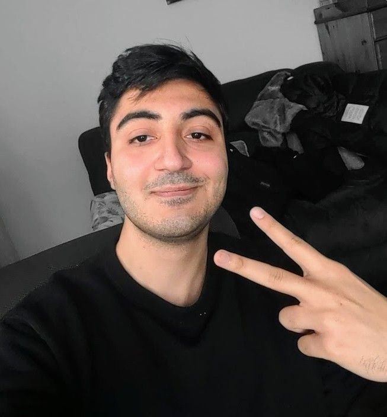
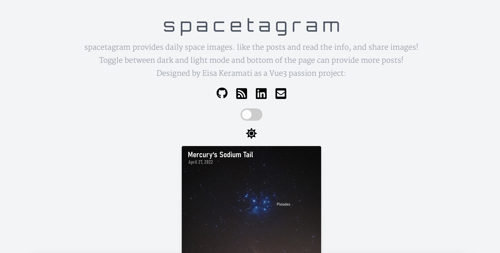
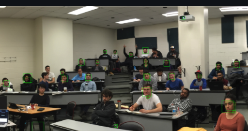
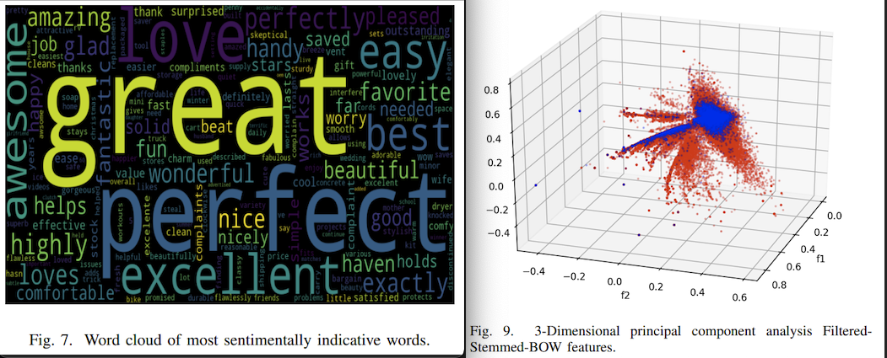
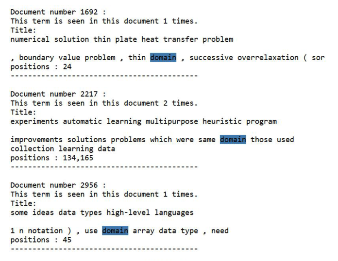
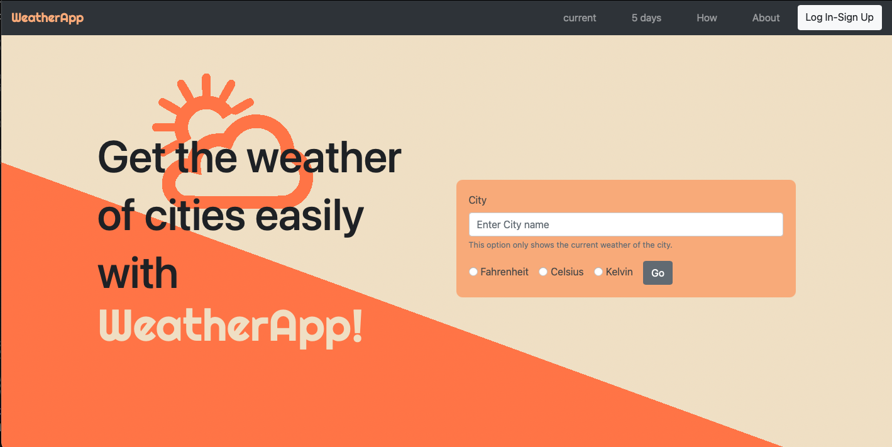
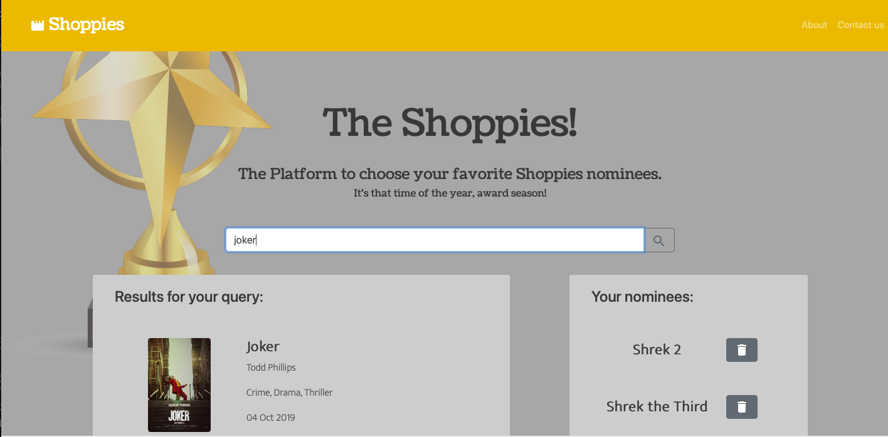
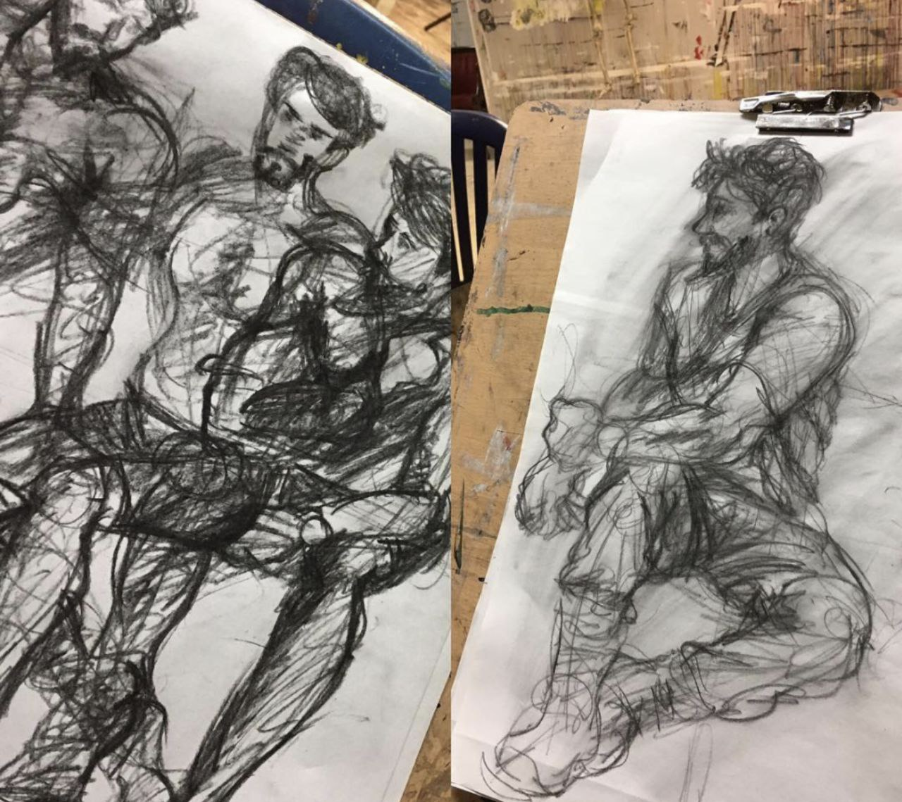
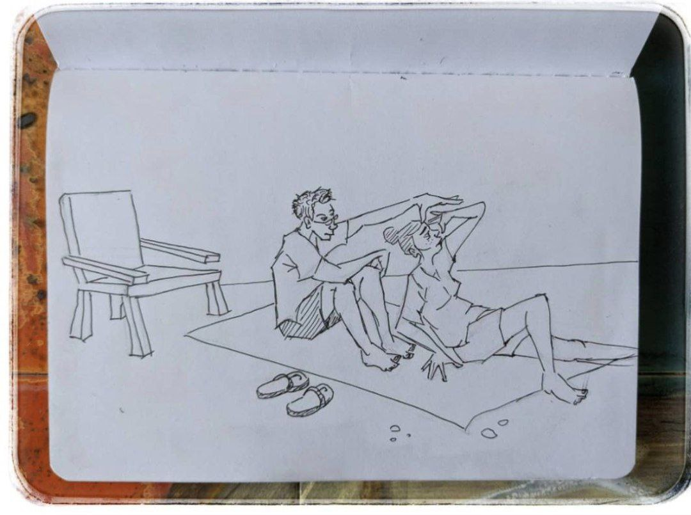
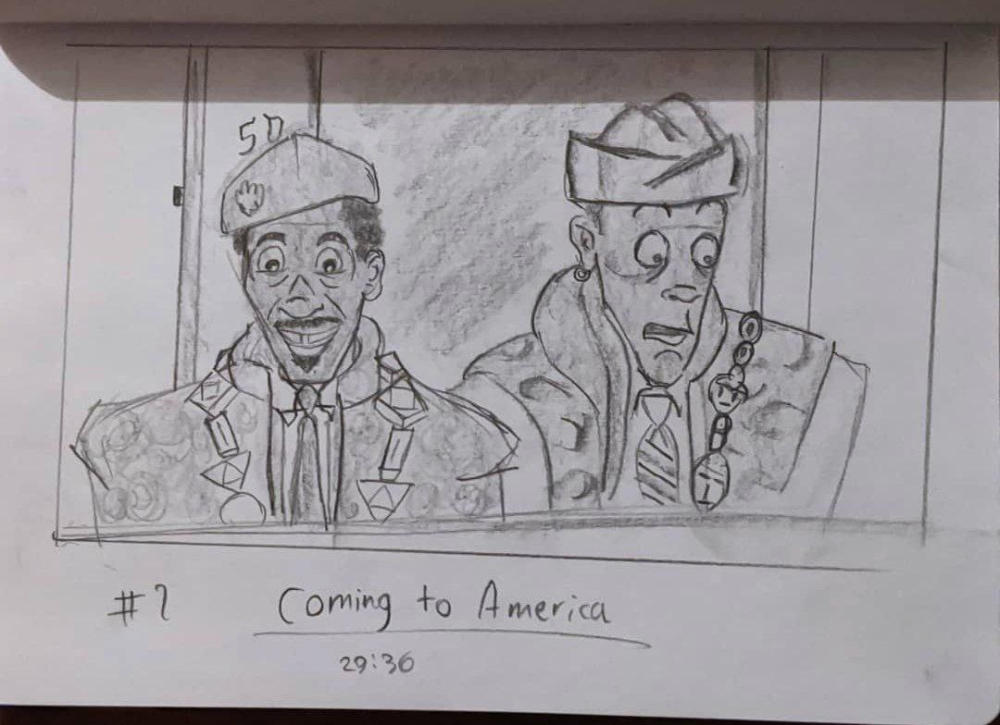

Eisa Keramatinejad
Software Engineer II at Microsoft
I build full-stack features end to end, from architecture to production, in TypeScript, Python and C#. Based in Toronto.
About me
- Role
- Software Engineer II, Microsoft
- Experience
- 5+ years in industry
- Location
- Toronto, ON
- Education
- B.Sc. Computer Science, Toronto Metropolitan University
Hi!
I'm Eisa, a full-stack software engineer at Microsoft. I like owning a feature the whole way: designing it, building the APIs and UI, testing it properly, and then watching the telemetry once it's in people's hands.
At Microsoft I've led security-focused work on Microsoft Teams, built features for an internal data analytics platform used by 20+ teams, and engineered telemetry and data infrastructure for Microsoft Fabric. Before that I built products for media, news and banking clients at Thoughtworks and CIBC.
Outside of work I play volleyball and soccer, read, watch anime, and sketch a lot.
Experience
-
Dec 2025 – Present
Software Engineer II
Microsoft, Toronto
- Built full-stack features for an internal data analytics and visualization platform in TypeScript and Python: calculated columns, dashboard filtering, charting and query-language support. Adopted by 20+ internal teams, with chart development time cut through backend optimizations.
- Engineered telemetry and data infrastructure for Microsoft Fabric: Linux packaging pipelines, Kusto log routing across 26 namespaces, and automated migration of 450+ GDPR data-processing jobs off legacy infrastructure.
- Built SQL-to-Kusto migration and validation tooling, and an AI-powered service that reports each release's commits, environments and an LLM-generated change summary.
-
Apr 2024 – Dec 2025
Software Engineer
Microsoft, Toronto
- Led end-to-end development and rollout of a security-focused Microsoft Teams feedback feature, replacing a security-risk screenshot workflow with a secure, privacy-preserving capture experience. It now handles 800+ submissions daily.
- Owned architecture, APIs and full-stack integration in TypeScript and C#, plus monitoring dashboards, accessibility, and unit, end-to-end and visual regression tests.
-
Jul 2022 – Apr 2024
Software Engineer
Thoughtworks Canada, Toronto
- Designed the architecture, infrastructure and backend for a high-traffic contest platform for a Canadian media company, mitigating thundering-herd load spikes to keep it stable at peak.
- Built a customizable financial watchlist service for a Canadian news company, plus a tiered membership flow that increased registrations and a redesigned account-creation flow.
-
Jun 2021 – Jun 2022
Front-End Developer
CIBC, Toronto
- Built the Interac e-Transfer request-money flow and customizable account alerts in CIBC's online banking app.
- Restructured the digital dispute app's logic into a graph-based model, improving performance and readability.
Earlier roles
-
2019 – 2020
Vice President of External Affairs
TMU Science Society
Ran networking and job-shadowing events, secured event sponsorship, recruited industry panelists, and represented the Faculty of Science in the Ontario Science Students' Association.
-
2019
Teaching Assistant
Toronto Metropolitan University
Database Systems (CPS510): grading, tutorials and student support.
-
2018 – 2019
Teaching Assistant
Amirkabir University of Technology
Principles of Artificial Intelligence and Linear Algebra: assignments, grading, tutorials and labs.
Education & honours
B.Sc. Computer Science
Toronto Metropolitan University, 2019–2021
CGPA 4.00. Involved with the Faculty of Science, the TMU Science Society and the Ontario Science Students' Association.
Computer Engineering
Amirkabir University of Technology, 2016–2019
CGPA 17.8/20. ICPC programming contest moderator and member of the Computer Engineering Scientific Association.
- Dennis Mock Student Leadership Award for leadership and contributions to TMU student life
- Dean's List 2020 and 2021, Toronto Metropolitan University
- Azure Fundamentals Microsoft Certified
Skills
- Languages
- TypeScript, JavaScript, Python, C#, SQL, KQL, Java
- Frontend
- React, Vue.js, Ember.js, HTML/CSS, accessibility (WCAG)
- Backend
- Node.js, Flask, Django, Spring Boot, REST and GraphQL APIs
- Data & cloud
- Microsoft Azure, Kusto (Azure Data Explorer), Microsoft Fabric, MongoDB, Linux
- Quality & ops
- CI/CD, telemetry and production monitoring, unit, end-to-end and visual regression testing
- Ways of working
- Agile, test-driven development, AI-assisted development, code review
Projects
-

SpacetagramVue.js app for NASA's image of the day -

Face detectionMulti-scale detector with HOG features and an SVM, in Python -

Sentiment analysisClassifying Amazon reviews with scikit-learn -

Information retrieval systemSearch engine for a document collection -

Weather appDesign and implementation -

The ShoppiesMovie nomination app
Sketches
I take pride in my artistic side and love life drawing and character design. A few pieces, as a way to get to know me better.
-

Life drawings in the studio
15–20 minute studies of a live model. September 2016.
-

Cherry Beach, Toronto
Couples gazing at the water, drawn with consent by yours truly. June 2020.
-

Coming to America
Storyboard practice based on the film. August 2020.